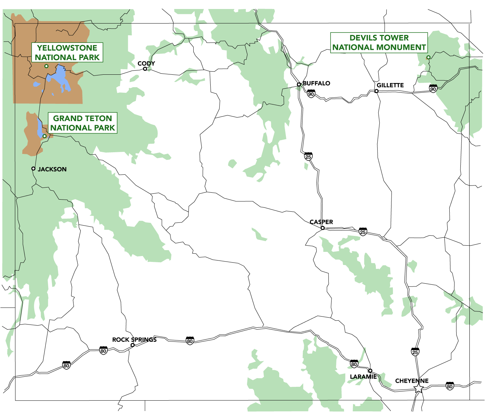

Wyoming's western half is mostly covered by the ranges and rangelands of the Rocky Mountains, while the eastern half of the state is high-elevation prairie called the High Plains. Almost half of the land in Wyoming is owned by the U.S. government, leading Wyoming to rank sixth by area and fifth by proportion of a state's land owned by the federal government. Federal lands include two national parks—Grand Teton and Yellowstone—two national recreation areas, two national monuments, several national forests, historic sites, fish hatcheries, and wildlife refuges. The name had been used earlier for the Wyoming Valley in Pennsylvania, and is derived from the Munsee word xwé:wamənk, meaning "at the big river flat". The main drivers of Wyoming's economy are tourism and extraction of minerals such as coal, oil, natural gas, and trona. The climate is semi-arid and continental, drier and windier than the rest of the country with greater temperature extremes.
Northwest > Wyoming
Map of Wyoming
Interactive Wyoming map, showing all parks, preserves, trails and other locations
Devils Tower National Monument
An astounding geologic feature that protrudes out of the prairie surrounding the Black Hills. It is considered sacred by Northern Plains Indians and indigenous people. Hundreds of parallel cracks make it one of the finest crack climbing areas in North America

Grand Teton National Park
Especially high, rugged, steep and spectacular mountain range, north of Jackson and south of Yellowstone NP. Below the summits are glacial lakes, steep canyons, forests, meadows and the wide valley of the Snake River (Jackson Hole). Many excellent trails

Yellowstone National Park
First national park in the World amazing geothermal phenomena, spectacular Rocky Mountain scenery, and a vast array of wildlife. Toured by the circular Grand Loop Road, and other routes, linking with many dozens of trails